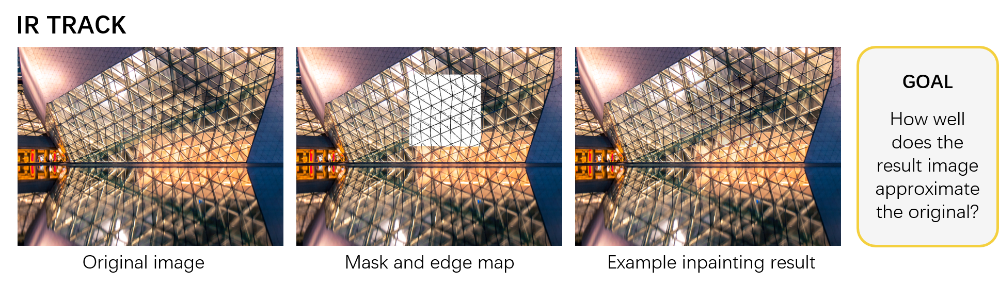
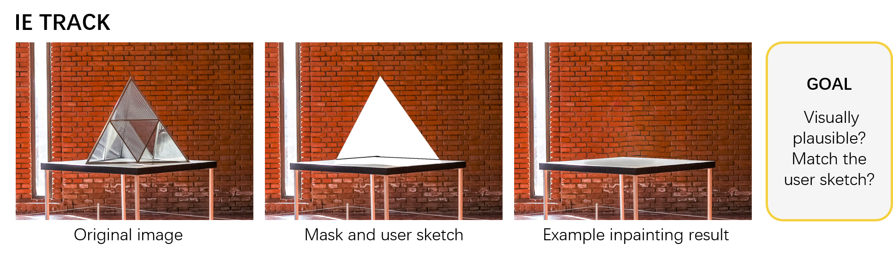

Evaluation criteria
We set different criteria for the two tracks.
For the IR track, we will use a combination of PSNR and SSIM, calculated within and around the missing areas between the original and the completed images.
For the IE track, we will use a combination of objective and subjective evaluations.


For objective evaluation, we use FID and the structure similarity metric, SS. FID measures the realism of the generated images. Meanwhile, SS measures the similarity between the input user sketch and the edge map in the missing region extracted by XDoG. For subjective evaluation, we use MOS. We will have a team of about 40-50 subjects to evaluate the completed images pairwisely, where each subject is given two images at once and required to select a better one from the two.